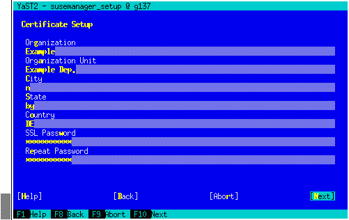
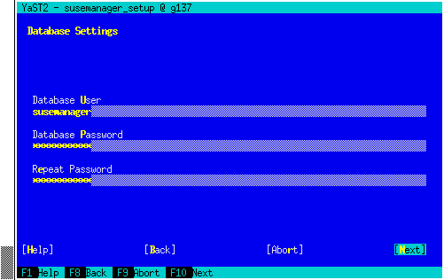

SUSE Manager Server 设置
本节介绍如何使用以下过程设置 Uyuni 服务器：
-
使用 YaST 启动 Uyuni 设置
-
使用 Uyuni Web UI 创建主管理帐户
-
为基础结构命名并添加登录身份凭证
-
从 SUSE Customer Center 同步 SUSE Linux Enterprise 产品通道
-
Set up Uyuni with external database
|
Uyuni 属于 SUSE Linux Enterprise 产品系列，因此与 SUSE Linux Enterprise Server 随附的软件兼容。 Uyuni 是一个复杂的系统，因此不允许安装第三方软件。仅当您不交换基本库（例如 SSL）、加密软件和类似工具时，才允许安装第三方供应商提供的监视软件。在提供产品支持的过程中，SUSE 有权要求去除任何第三方软件（以及关联的配置更改），然后在干净的系统上重现问题。 |
|
请不要将 Uyuni 服务器注册到其自身。必须单独管理 Uyuni 服务器，或者使用另一个独立的 Uyuni 服务器来管理它。有关使用多个服务器的详细信息，请参见 Using Multiple Servers to Manage Large Scale Deployments。 |
1. 使用 YaST 安装 Uyuni
本节指导您使用 YaST 来完成 Uyuni 安装。
-
在 Uyuni 服务器上的命令行中，使用
yast2 susemanager_setup命令开始安装。 -
在简介屏幕中选择 ，然后单击 下一步 继续。
-
输入电子邮件地址以接收状态通知，然后单击 下一步 继续。 Uyuni 有时可能会发送大量通知电子邮件。如果需要，您可以在安装后在 Web UI 中禁用电子邮件通知。有关禁用电子邮件通知的详细信息，请参见 User Details。
-
输入您的证书信息和口令。 如果您打算使用自定义 SSL 证书，需要首先进行此项设置。有关 SSL 证书的详细信息，请参见 SSL 证书。
 -
单击 下一步 继续。
-
在 屏幕中输入数据库用户和口令，然后单击 下一步 继续。
 -
单击 下一步 继续。
-
出现提示时，单击 是 以运行安装程序，然后等待安装完成。
-
单击 下一步 继续。 记下 Uyuni Web UI 的地址。
-
单击 完成 以完成 Uyuni 安装。
创建证书口令时，请确保口令长度至少为七个字符。口令不能包含空格、单引号或双引号（
'或"）、感叹号 (!) 或美元符号 ($)。始终将口令存储在安全的位置。没有此口令将无法设置 Uyuni 代理。
2. 创建主管理帐户
本节指导您创建组织的 Uyuni 主管理帐户。
|
主管理帐户是 Uyuni 中 权威最高的帐户，因此应将帐户访问信息存储在安全的位置。 出于安全考虑，建议由主管理员创建 较低级别的管理帐户，旨在用于对组织和各个组进行管理。 |
|
如果用户启用了 HSTS，较新浏览器版本可能会阻止通过 Web 访问 Uyuni Server FQDN。 通过 HTTP 安装
|
-
在浏览器中，输入完成安装后提供的地址。 使用此地址打开 Uyuni Web UI。
-
在 Web UI 中，导航到字段并输入您的组织名称。
-
在和字段中，输入您的用户名和口令。
-
填写“帐户信息”字段，包括用于接收系统通知的电子邮件地址。
-
单击 创建组织 以完成管理帐户的创建。

此时会出现 Uyuni 页。
3. 从 SUSE Customer Center 同步产品
SUSE Customer Center (SCC) 维护一系列储存库，其中包含所有受支持企业客户端系统的软件包、软件和更新。这些储存库已组织成不同的通道，其中每个通道提供特定于某个发行套件、发行版和体系结构的软件。与 SCC 同步后，客户端可以接收更新，可组织成不同的组并指派到特定的产品软件通道。
本节介绍如何通过 Web UI 来与 SCC 同步，以及如何添加第一个客户端通道。
在与 SCC 同步软件储存库之前，需在 SUSE Manager 中输入组织身份凭证。在以前的版本中，使用的是所谓的镜像身份凭证。您可以使用组织身份凭证访问 SUSE 产品下载内容。可以在 https://scc.suse.com/organizations 中找到您的组织身份凭证。
在 SUSE Manager Web UI 中输入您的组织身份凭证：
-
在 SUSE Manager Web UI 中，选择。
-
在
安装向导页中，选择 组织身份凭证 选项卡。 -
单击 添加新身份凭证。
-
在对话框中，输入
用户名和口令，然后单击 保存 确认。在系统以打勾图标的形式确认身份凭证后，请继续执行 过程：与 SUSE Customer Center 同步。
-
在 Web UI 中，导航到。
-
在
安装向导页中，选择 SUSE 产品 选项卡。 如果您以前在 SUSE Customer Center 中注册过产品，则表格中会填充产品列表。此操作可能需要几分钟时间。您可在右侧的从 SUSE Customer Center 刷新产品目录部分监视该操作的进度。该产品表格会列出体系结构、通道和状态信息。有关详细信息，请参见 向导。
-
使用
按产品说明过滤和按体系结构过滤来过滤显示的产品列表。 如果您的 SUSE Linux Enterprise 客户端基于x86_64体系结构，请向下滚动页面，并选中此通道对应的复选框。-
选中每个通道左侧的复选框将相应通道添加到 Uyuni。 单击说明左侧的箭头符号可以展开产品并列出可用的模块。
-
单击 添加产品 开始产品同步。
添加通道后，Uyuni 将安排该通道的同步。这可能需要较长时间，因为 Uyuni 会将通道软件源从 SUSE Customer Center 中的 SUSE 储存库复制到您服务器的本地
/var/spacewalk/目录。PostgreSQL 和透明巨页在某些环境中，内核提供的_透明巨页_可能会明显减慢 PostgreSQL 工作负载的速度。
要禁用透明巨页，请将
transparent_hugepage内核参数设置为never。必须在/etc/default/grub中更改此设置，并将其添加到GRUB_CMDLINE_LINUX_DEFAULT行，例如：GRUB_CMDLINE_LINUX_DEFAULT="resume=/dev/sda1 splash=silent quiet showopts elevator=none transparent_hugepage=never"
要写入新配置，请运行
grub2-mkconfig -o /boot/grub2/grub.cfg。通过查看
/var/log/rhn/reposync目录中的通道日志文件来实时监视通道同步过程：tail -f /var/log/rhn/reposync/<CHANNEL_NAME>.log
通道同步过程完成后，您可以继续进行客户端注册。有关详细说明，请参见 客户端注册。
-
4. Set up Uyuni with external database
In this example, we use RDS product from Amazon Web Service.
|
Currently, configuring an external database is not supported by You can configure an external database using the |
This section guides you through Uyuni setup using mgr-setup.
-
Create
setup_env.shfile in the/rootdirectory. -
Set the variables defining your certificate information and password. For more information about certificates, see 过程：Uyuni 安装.
CERT_O="SUSE" CERT_OU="SUSE" CERT_CITY="N" CERT_STATE="B" CERT_COUNTRY="DE" CERT_EMAIL="email@prov.com" CERT_PASS="spacewalk" USE_EXISTING_CERTS="N"
-
Define your database. The user and password are created during the setup. If you are using an external database, specify the hostname and port.
MANAGER_USER="spacewalk" MANAGER_PASS="spacewalk" MANAGER_ADMIN_EMAIL="email@prov.com" MANAGER_DB_NAME="susemanager" MANAGER_DB_HOST="db hostname" MANAGER_DB_PORT="db port" MANAGER_DB_PROTOCOL="TCP" MANAGER_ENABLE_TFTP="Y"
-
Set up the variables defining the specific configuration for the external database. In this scenario, an RDS database has been deployed and is accessible by the server. To establish a connection, an AWS certificate is also required.
EXTERNALDB_ADMIN_USERandEXTERNALDB_ADMIN_PASSare the credentials set during the RDS deployment:EXTERNALDB_ADMIN_USER="postgres" EXTERNALDB_ADMIN_PASS="spacewalk" MANAGER_DB_CA_CERT="/path_to/aws.crt" REPORT_DB_CA_CERT="/path_to/aws.crt" EXTERNALDB_PROVIDER="aws"
The AWS certificate can be found at https://docs.aws.amazon.com/AmazonRDS/latest/UserGuide/UsingWithRDS.SSL.html.
To connect to the external database, configure the report database with the RDS hostname and port.
REPORT_DB_USERandREPORT_DB_PASSwill be created by the script:REPORT_DB_HOST="db hostname" REPORT_DB_PORT="db port" REPORT_DB_NAME="reportdb" REPORT_DB_USER="pythia_susemanager" REPORT_DB_PASS="pythia_susemanager"
Do not use
MANAGER_USERas the user when deploying RDS.